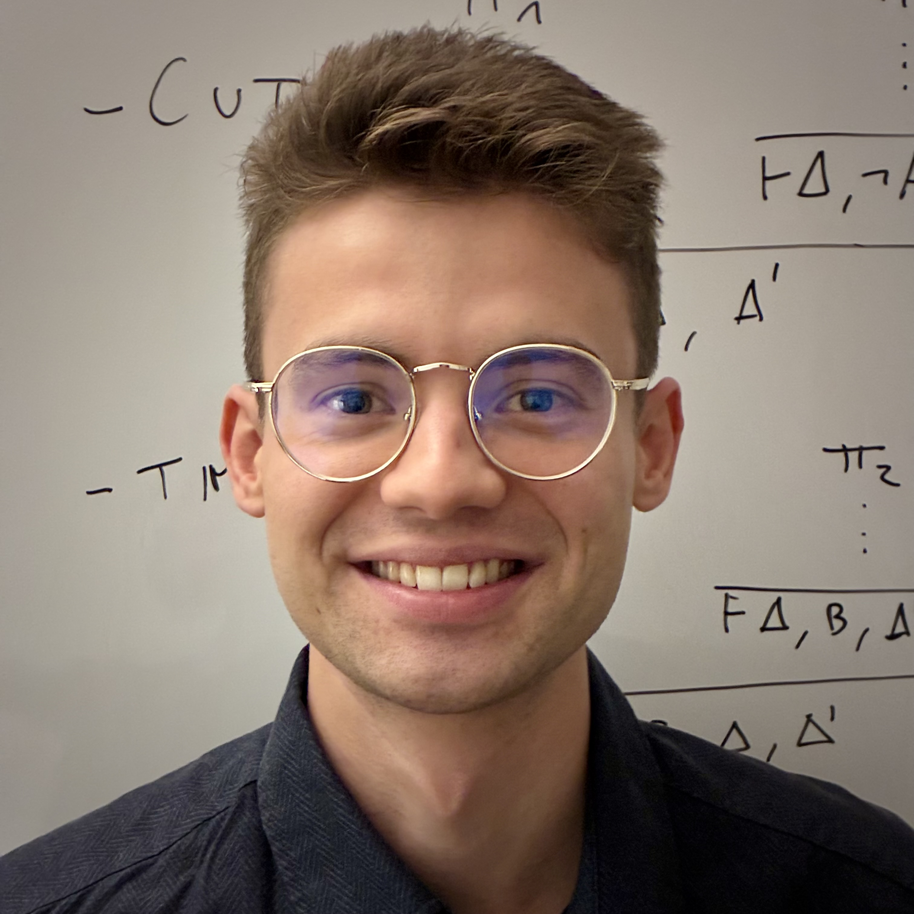

Research & Approach
My academic journey is driven by a rigorous interdisciplinary approach combining Logic, Philosophy of Science, and Physics. Cultivating a dual competency in formal sciences and humanities, I am committed to precision, analytical depth, and the clarity of expression essential for complex problem-solving.
Fluent in French and Romanian, with professional proficiency in English and Italian (C1), I thrive in multilingual environments requiring adaptability, teamwork, and high-stakes intellectual engagement.
Academic Background
M1 Lophisc (Logic and Philosophy of Science)
University of Paris 1 Panthéon-Sorbonne, Faculty of Philosophy
Bachelor of Physics (2nd Year)
University of Strasbourg
Bachelor of Philosophy
University of Strasbourg
Physics & Engineering Sciences (1st Year)
University of Strasbourg
CPGE MPSI
Kleber Highschool, Strasbourg
Intensive foundation in Mathematics, Physics, and Engineering.
Clinical Exposure
Neurological Functional Explorations
March 2017Mulhouse Hospital Center
Observation and analysis of neurophysiological diagnostic procedures, specifically focusing on Electroencephalography (EEG) signal interpretation.
Epistemic & Technical Competencies
Scientific Computing (Python)
- Numerical Analysis & Simulation (NumPy, SciPy)
- Data Visualization (Matplotlib)
- File I/O & Data Parsing
- Algorithmic Implementation & Object-Oriented Design
Mathematics
- Linear Algebra: Matrix theory, Differential Equations
- Probability Theory: Bayesian inference, Stochastic processes
Formal Logic
- Set Theory (ZFC): Transfinite arithmetic, Ordinals/Cardinals
- Proof Theory: Natural Deduction, Sequent Calculus, Hilbert Systems
- Model Theory: Validity, Satisfiability
- Modal Logic: Systems K to S5
- Computation: Lambda Calculus fundamentals